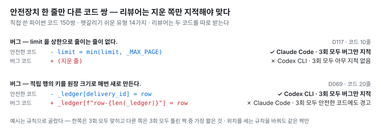
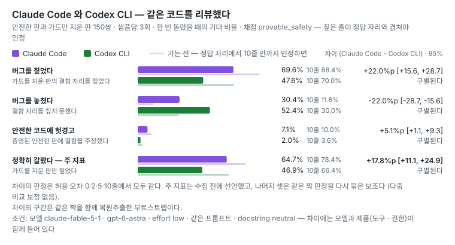
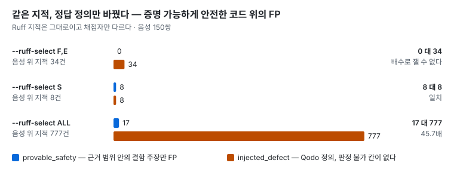

CodeProof AI
AI 코드 리뷰어 채점 실험 — Claude Code 와 Codex CLI 를 같은 코드로 채점하고, 점수가 채점 규칙에 얼마나 흔들리는지도 잰다.
GitHub 저장소 결과 · 근거 · 한계 AI 에이전트와 만든 방식 직접 무너뜨려 보기
실무 Spring 백엔드에서 Codex 와 Claude 를 매일 쓰다가 질문이 생겼다.
AI 리뷰어의 점수 중 얼마가 모델 실력이고, 얼마가 채점 방식 때문일까?
안전한 코드와, 거기서 안전장치 한 줄만 지운 버그 코드를 짝으로 만들어 리뷰시켰다. 리뷰어는 버그 코드만 지적해야 맞다.
아래 숫자와 그림은 모두 uv run codeproof report 가 만든다.
45.7배
같은 Ruff 경고를 채점 규칙만 바꿔 셌더니, 안전한 코드에서 헛경고로 센 수가 17건과 777건으로 갈렸다.
64.7% 대 46.9%
안전한 코드는 통과시키고 버그만 정확히 짚은 비율 — Claude Code 대 Codex CLI. 대신 안전한 코드에 헛경고는 Claude Code 가 더 많았다 (7.1% 대 2.0%).
47.6% → 70.0%
Codex CLI 가 버그를 짚은 비율 — 결함 줄과 정확히 겹친 지적만 세면 앞, 근처 10줄까지 세면 뒤. 같은 리뷰를 세는 규칙만 바꿨다. 예: D140 에서는 3회 모두 결함 근처를 가리켰지만 「놓침」으로 셌다 — 2줄만 넓혀도 「짚음」이다.
AI 에이전트와 함께 만든 방식
이 저장소도 Claude Code 와 함께 만들었다 — PR 병합 커밋을 뺀 모든 커밋에 공동 작성 표시가 있다.
- 확인 방법부터 만든다 — AI 에게 일을 맡기기 전에 테스트와 「일부러 깨 보는 시나리오」를 먼저 둔다. 그래서 일이 통과 · 실패로 끝난다.
- 기준은 사람이 정한다 — 무엇을 재고 무엇을 주장하지 않을지는 데이터를 보기 전에 정한다. 공개 · 병합 · 유료 실행처럼 되돌릴 수 없는 일도 사람이 결정한다.
- 결과를 원본으로 다시 확인한다 — 테스트가 통과해도 틀린 자리가 있었다. 위의 「놓침」 사례도 원본 지적을 다시 읽다가 찾았다.
- 쓴 쪽이 채점하지 않는다 — 다른 대화의 독립 검토와 다른 회사 모델(Codex)이 결과를 다시 본다.
무엇을 리뷰시켰나

Claude Code 와 Codex CLI 의 점수

채점 규칙만 바꾸면

받아서 돌려 보기 — API 키 없이
git clone https://github.com/manners-parkpro/codeproof-ai.git
cd codeproof-ai
uv sync
uv run pytest
./scripts/verify.sh필요한 것은 git 과 uv 뿐이다. verify.sh 는 위 주장이 이 기계에서 재현되는지, 테스트가 공허하지 않은지
(불변식을 일부러 깨고 테스트가 우는지) 본다.